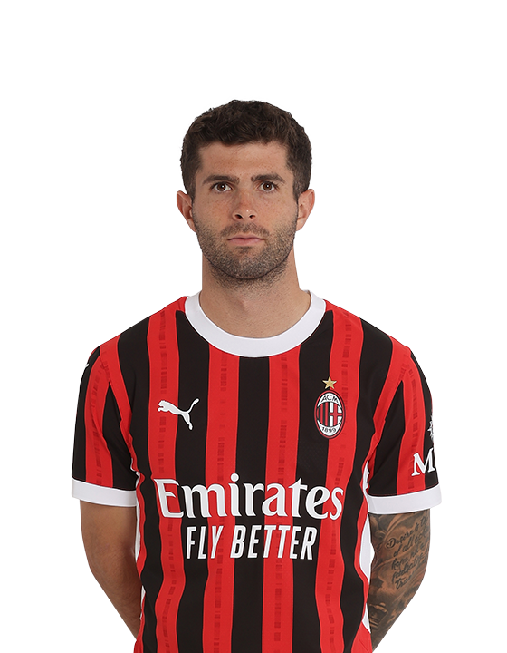

VOTO STAGIONE
6.5
Il Lupo F.C
- Perin
- Pinsoglio
- Di Gregorio
- De Sciglio
- Walker
- Darmian
- Dumfries
- Cambiaso
- Gatti
- Coco
- Savona
- Duncan
- Locatelli
- Calhanoglu
- Pulisic
- Duda
- Thuram K.
- Asllani
- Frendrup
- Rebic
- Odgaard
- Gonzalez N.
- Lookman
- Vitinha O.
- Almqvist
MVP

Simone Aimaro
Annata partita benissimo per la tana del lupo, prime posizioni della classifica nelle prime giornate. Fra infortuni ed espulsioni, perde un po’ la corda scudetto